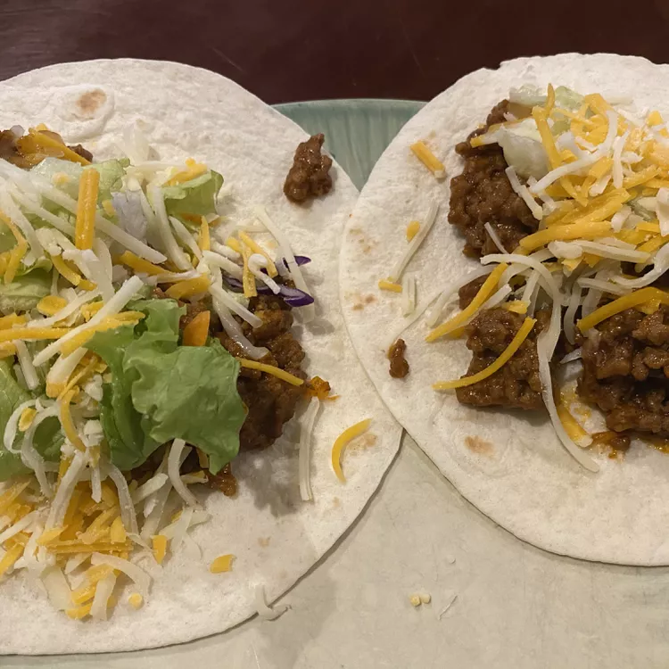

Tacos

Description
These Birria tacos are cripy on the outside, yet tender and juicy on the inside.
Bellow you'll find the ingredients and steps for this increible recipe!
Ingredients
- 2 pounds ground beef
- salt and ground black pepper to taste
- 1 (14.5 ounce) carton Campbell's Mexican-style tomato soup
- 12 taco shells, warmed
- ¾ cup shredded lettuce
- ¾ cup diced tomato
- ⅓ cup shredded Cheddar cheese
Steps
- Cook and stir beef in a 12-inch skillet over medium-high heat until well browned and crumbly, 7 to 9 minutes. Pour off any fat. Season with salt and pepper.
- Stir soup into the skillet and bring to a boil. Reduce the heat to low and cook, stirring often, until soup is reduced, about 5 minutes.
- Divide beef mixture among taco shells. Top with lettuce, tomato, and cheese.